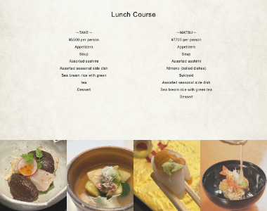
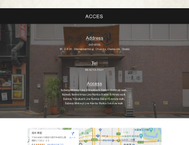

実務制作
割烹店 浅井東迎 英語版サイト

ページ全体（スクロールできます）
Background
制作背景
- クライアント
- 浅井東迎（大阪府の割烹料理店）
- ターゲット
- 大阪を訪れる外国人観光客や、日本食・割烹料理に興味のある海外ユーザー
- 目的・狙い
-
- 海外ユーザーに店舗の魅力や料理、アクセス情報を分かりやすく伝え、来店につなげること。
- 要望
-
- 関西にある沖縄料理店の魅力を発信し、初めて訪れる方でも店舗を探しやすく、沖縄らしい雰囲気を感じられる情報サイトを制作したい。
Concept
コンセプト
- 与えたいイメージ
- 高級感・上質さ・和の趣
- フォント
- Arial
- カラー
-
和紙をイメージした背景と落ち着いた配色を採用し、日本料理店らしい上品な雰囲気を表現しました。
Point
ポイント
- ◾️和の雰囲気と料理の魅力が伝わるデザイン
- 割烹料理店ならではの落ち着いた雰囲気を表現するため、ブラックを基調とした配色や和紙をイメージした背景にした。また、料理や店内の写真を大きく掲載することで、店舗の雰囲気や料理の魅力が視覚的に伝わるデザインを意識した。
- ◾️必要な情報を分かりやすく整理したシンプルな構成
- 海外ユーザーが迷わず情報を取得できるよう、店舗紹介・コース料理・アクセス・店舗情報など、来店前に必要な情報をシンプルに整理した。装飾を抑えたレイアウトにすることで、写真や情報が見やすく、直感的に閲覧できる構成を意識した。


Overview
概要
- 作業工程
- 設計／ワイヤーフレーム作成／デザイン／コーディング
- 使用ツール・言語
-
- HTML、SCSS（コーディング）
- XD（ワイヤーフレーム作成、デザイン）
- Photoshop、Illustrator（画像加工、トリミング）
- 制作期間
-
- ■ 1週間
- 設計、ワイヤーフレーム作成：3日
- デザイン：1.5日
- コーディング：2.5日